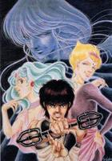

天空战记
【原 片 名】天空戦记シュラト  http://imgsrc.baidu.com/baike/abpic/item/caae68097cdf85bc2fddd459.jpg
【出品年代】1989年
【出品公司】タツノコプロ
【国别归属】日本
【剧集总数】38集 (外加2集总集篇和6集OVA)
【声优资料】
修罗王一平——关俊彦
夜叉王黑木凯——子安武人
迦楼罗王利加——井上和彦
龙王良马——山寺宏一（加持良治）
那罗王莲加——林原惠
比姿王啊达——飞田展男
达婆王高野——中田和宏
吉祥天——水谷优子
调和神慧明大师——岛本须美
马里迁/不动明王——松本保典
雷帝英陀罗——铃置洋孝
破坏神湿华——若本归夫
丝克尔迷路（OVA）——速水奖
降三世明王——土井美加
军荼利明王——大滝进矢
撒拉丝——佐佐木优子
【内容简介】故事的主线围绕“创造神梵天”和“破坏神湿华”之间的战斗展开。人间界的少年日高一平和好友黑木凯被“调和神”慧明大师招入天界，转生为“修罗王”和“夜叉王”，和其余6位神将组成“八部众神将”以保卫天空界不被破坏神的破坏。然而黑木凯在转生时被“湿华”捕获心灵，成为与“八部众”为敌的头号反面人物，给一平带来了无尽杀机与烦恼。在保卫天空界的战斗中，一平与八部众的伙伴们不断遭遇危险，也一次次地杀出绝路--但同时也对世界的未来充满了迷惑。整个故事跌宕起伏，扣人心弦。片中正义与邪恶的较量，一平和黑木凯的友情，莲伽的感情，以及人类心灵的思考交织在整个故事中，为主题升华增色不少。
《天空战记》中的人物刻画的很丰满，“八部众”（ 修罗王一平、迦楼罗王利伽、天王乔加、龙王良马、夜叉王黑木凯、那罗王莲伽、闼婆王高野、比姿王阿达）人人性格鲜明，或热情或冷漠、或天真或沉稳、或缜密或莽撞、或诙谐或憨厚，给观众以极大的感染力。另外活泼可爱的吉祥天、端庄高贵的惠明大师也给人留下了深刻的印象。本片动画场景中的音乐别具气势。尤其是主题歌极为经典——清水咲斗子演唱的OPEN《Shinning Soul》和END《砂尘の迷图》在怀旧动画片中堪称极品。
《天空战记》是一部取材于古印度神话的日本动画名作，描述了“创造神梵天"和“破坏神湿婆"之间惊心动魄的斗争。无需讳言，这部片许多地方是类似于《圣斗士》的，就连神甲胄的设计都与《圣斗士》中的圣衣很相近，但如果能够深入了解不难发现《天空战记》其实已经超越了《圣斗士》那一类的暴力血腥，人物生动，画风细腻，可谓是青出于蓝而胜于蓝。
多年之后，日本二区终于发行了本片的DVD版本，分为BOX PART1和BOX PART2，BOX PART1收录前25话，目前市面可见版本有金驼的有损压缩5D5版以及飞马的8D5DECSS版，金驼的带有国语配音可惜是取自RM的而且画面也了有损压缩，飞马的忠实于原版是DECSS的，综合评价显然是飞马的胜出。飞马版继续推出BOX PART2部分的第26～第38话以及TV版总集篇和回忆篇，一共8D5。
【动画设定】
天空界概况：
总人口约一千万，中央的天空树底部直径约为2公里，上去还有七层。
月光窟是进入天空界的唯一通道，而手天岛则用来开启平成门。片中平成门被封，所以一平他们只有同时点燃四大圣殿（青龙、白虎、朱雀、玄武）中的灵光，才能开启。因此也上演了八部众自相残害的悲剧。
第一层——天空殿和周围中枢机构所在地，也就是慧明大师首次接见一平的地方。（也是修罗王、夜叉王第一次对决的地方）
第二层——天王的出生地（怪不得如此尊贵）
第三层——闼婆王的出生地
第四层——吉祥天的出生地，也是光流之泉所在地。（记得她好像在这洗过澡，而且当时“四王”都在...）
第五层——加娄罗王出生地
第六层——都是老百姓喽
第七层——那罗王的出生地
天空人大都吃一种甘露就饱了，记得一平望着池里的鱼流口水时，力伽说：“残忍的人类啊！！！”
天空界很像陶翁笔下的“桃花源”，只不过调合之神被石化后开始流行一种叫赤肿斑的病，死了很多人。
附：天界机构介绍
调合神：主司调合，治理天界的神族之首
雷帝：神军总司令官，统领千万神军
左、右天王（不同于天王）：雷帝的助手，持有双天方轮环
八灵师（业、法、利、护、光、王、爱、祈灵师）：为天界文官的首席，主管天界的生产、生活活动，合力可使出至天曼陀罗阵
十二天圣
摩利支天（东）
火天（东南）
焰摩天（南）
罗刹天（西南）
水天（西）
风天（西北）
欢喜天（北）
伊舍那天（东北）
上宫天（上方）
地天（下方）
光日天（空上方）
月天（极下方）
天空殿十二方向的守护者
十六大护：转法&轮的守护者，马里千就是其中之一
四方使：北面、南灵、西方、东林
四兽使：傀儡、猿牙、羯摩、木鸦
八护轮：法护、护军、双护、护明、贤护、护空、珠护、护眼
四方使、四兽使主要保护八护轮，而只有八护轮才能转动护法&轮，此轮转动时可以改变天空界的时间
八大明王（不动、降三世、军荼利、无能胜、大威德、马头、步掷、大轮明王）：本是调合之神的得利助手，但因前三位明王的背叛而覆灭。也就是后来阻挡一平他们的亚加拉达、杜拉因萝和伍大力。
十二罗帝（幻、冥、雷、水、雾、地、日、月、火、风、金、木）：原神族的部将，后因分别归属正、邪两方而分裂。
幻梦重三千
近卫重神军十二万
四天王军八十万
创造神：一万年前封住破坏神的人，后灵魂付在修罗王、夜叉王以及另一神秘人身上
八部众（八大天王）：神军中最强的八名战士，作战时的先锋，配有铠甲（咒语是依莫拉萨），各人有各人的绝技，另外还有合技：紫风曼陀罗阵（3人）、兽王曼陀罗阵（4人）、宝珠曼陀罗阵（5人）、智慧曼陀罗阵（6人）、金刚曼陀罗阵（7人）、天空曼陀罗阵（8人）。
修罗王 日高一平——因破坏神从中作梗，使体内苏魔神沉睡，转世到了人间，后被调合之神召回。是一个调皮单纯的黑发少 年。经历重重险阻终于成熟起来。
铠甲：狮子
绝技：修罗摩破拳 修罗金刚摩破拳
夜叉王 黑木凯——与修罗王一同转世到人间，本性温柔善良，回到天空界后被破坏神控制，成为对付神族的工具。最后终于被修罗王用友情感化，合力消灭了破坏神。
铠甲：狼
绝技：疾风魔狼剑 夜叉金刚阵
加娄罗王力伽——八部众里最漂亮的战士，外表放浪不羁心中却很认真。与一平由冤家变为好友，后来舍命为其消除体内魔性。
铠甲：凤凰
绝技：加娄罗翼吹雪 加娄罗火翼阵
闼婆王高也——八部众中最认真的战士。多次与力伽交锋，可谓势均力敌。
铠甲：水牛
绝技：闼婆水浒轮 闼婆水雷染
那罗王莲伽——八部众中唯一的女孩子。性格倔强，尊敬因陀罗而执迷不悟地为他效忠，无奈杀死了爱她的马里千。后被天王用冰封住。
铠甲：独角兽
绝技：那罗无双华 那罗朱灵华
天王乔伽——八部众之首。为人真诚忠厚，也因此被他所尊敬的因陀罗出卖。最终看清了敌人的真面目而与之同归于尽。（结尾时好像与莲加产生了感情，嘻嘻！）
铠甲：剑齿虎
绝技：天王水晶结 天王降魔杵
龙王良马——八部众中实力最强。与天王是至友，因而共同对抗因陀罗，多次舍命战斗。（他还是八个人中维一结婚的）
铠甲：龙
绝技：龙王火焰极
比姿王阿达——八部众中最具有攻击性。本是一名普通侍卫，后被选拔出来，因此非常尊祟调合之神。
铠甲：犀牛
绝技：比姿地震波 比姿流砂
调合之神慧明大师——美丽的天界女神，不幸被因陀罗用妖术石化，经过一平等人的奋战使她复苏。后来在与破坏神的战斗中牺牲。
雪山神女吉祥天——调合之神的继承人，活泼可爱，帮助修罗王他们对抗破坏神。
雷帝因陀罗：本是天界中权力仅次于调合之神的人，但体内魔性使他被破坏神利用，将调合之神石化，后被天王杀死。
破坏神——阿拉神军的首领，与调合之神对立。一万年前被创造神封住，后打破了封咒，被一平、阿凯合力消灭。
不动明王亚加拉达——八大明王中威力最强的一个，只可惜助纣为虐，被一平消灭。
降三世明王杜拉因萝——厉害的女明王，有一种绝技能毁灭人的记忆，修罗王就曾被她打入凡间。